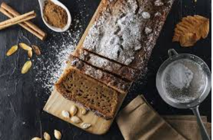

En Bizcochos Saludables, nuestro propósito es revolucionar el mundo de los postres al ofrecer opciones deliciosas y nutritivas que permitan a nuestros clientes disfrutar de un buen sabor sin comprometer su salud. Nos dedicamos a crear bizcochos elaborados con ingredientes naturales , bajos en azúcares refinados, sin grasas trans ni aditivos artificiales, para que cada bocado sea una experiencia sana, sabrosa y llena de bienestar. Creemos que llevar una vida saludable no tiene por qué ser sinónimo de privaciones, y estamos comprometidos en hacer que comer de forma equilibrada sea un placer para el paladar. Nuestro objetivo es brindar a cada persona la oportunidad de consentirse con productos deliciosos que apoyen su salud, sin renunciar al disfrute de un buen postre.
Inicio 